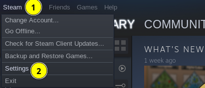
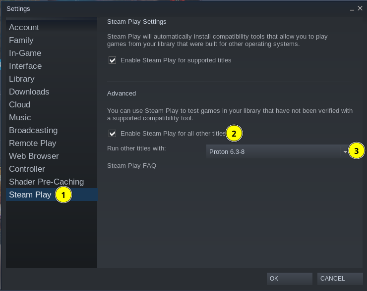
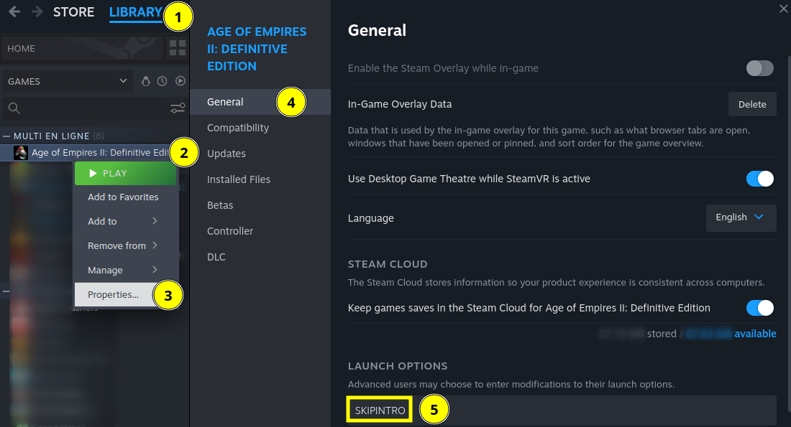
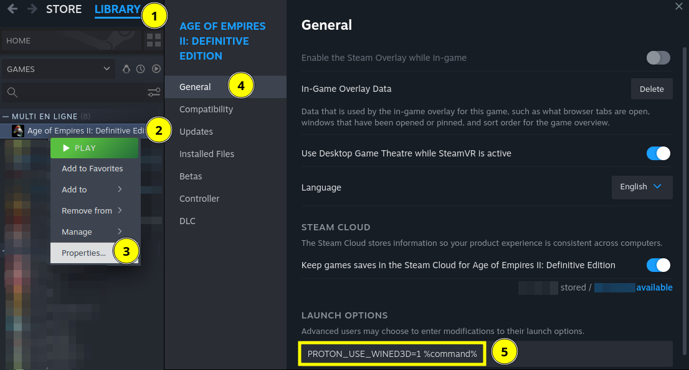

§ Which version of AoE2 should I play?
As of 2025, there are three mutually-incompatible versions of Age of Empires II:
- Age of Empires II: Definitive Edition, released in 2019 for PC and 2023 for Xbox and available on Steam (Linux-friendly), on the Microsoft store (not Linux-friendly) and through the Xbox game pass (not Linux-friendly)
- Age of Empires II: HD Edition, released in 2013 and available on Steam (Linux-friendly)
- Age of Empires II: The Age of Kings / The Conquerors, released in 1999 and available on CD (Linux-friendly) through various resellers
There's very little debate about which version is the best, and they all run on Linux equally well, so let's get straight to the answer: play the Definitive Edition and get it on Steam.
There are some fair points to be made about playing an older version, though:
- If your friends play an older version and you want to play with them, play their version.
- If your hardware can't run the Definitive Edition, and you can't aford upgrading, try an older version (keep in mind that if you've poor network connectivity, the Definitive Edition is better for online multiplayer).
- If you don't have Internet or want to make sure you'll be able to play forever, play The Age of Kings / The Conquerors, because latter versions require an Internet connection (and a server running somewhere at Microsoft).
If none of these is particularly important to you, again: play the Definitive Edition and get it on Steam (NB: you'll be able to play with your friends who got it on the Microsoft Store or through the Xbox game pass, don't worry).
§ Can I play AoE2 on a Steam Deck?
Yes: the Steam Deck is just a (small) PC running SteamOS, a Linux distribution based on ArchLinux. What follows is applicable to the Steam Deck as to any other PC running Linux. You'll probably want to plug a mouse and a keyboard to your Steam Deck to play, though.
§ Can I play AoE2 on a Linux / Android smartphone or on a Raspberry Pi?
Maybe. Many modern Linux / Android smartphones and the best Raspberry Pis are powerful enough to run a game like Age of Empires II. Most of them, however, use an ARM CPU, when Age of Empires II was designed for x86 CPUs only. Using an emulator is therefore mandatory.
I still have to write a section about emulation, but in the meantime, have a look at this YouTube video showing the Definitive Edition running on an Android phone or this Reddit thread about playing The Age of Kings / The Conquerors on a Raspberry Pi 4.
§ How do I play Age of Empires II: Definitive Edition on Linux?
§ Single player
- Install Steam (the Linux version).
- Start Steam and log in.
- Open the “Steam” menu (1), then “Settings” (2). 
- Go to the “Compatibility” section (1) and check the “Enable Steam Play for all other titles” box (2). You can leave the “Run other titles with” dropdown list (3) to its default value but make sure it is at least Proton 8.0-4 (earlier versions up to 8.0-3c won't work — even though they used to work in the past). 
- try this custom build of the older Proton 7.0-6 (it may crash at first launch — just launch the game again), or
- switch to the WineD3D OpenGL backend instead of the default DXVK Vulkan backend (see this section for details).
- Now, AoE2:DE should be available in your Steam library as it would be if you were on Windows. Install the game.
- If you don't want the introduction video, go to your “Library” (1), right click “Age of Empires II: Definitive Edition” (2), click “Properties” (3), then “General“ (4) and type SKIPINTRO in the “Launch options” (5). 
- Start the game.
At this point, the game should work fine in single player mode. If you want to play online multiplayer, however, keep on reading.
§ Online multiplayer
Ignoring what follows won't prevent you from enjoying single player mode, but you'll encounter synchronization issues after a few seconds of playing online.
- Quit the game (it is important that you have started it at least once before the next step).
- Open a terminal.
- Execute the following commands (every single character is important, including the quotes):
cd "$(mktemp -d)"wget "https://download.microsoft.com/download/9/3/F/93FCF1E7-E6A4-478B-96E7-D4B285925B00/vc_redist.x64.exe"cabextract vc_redist.x64.execabextract a10- If you're using Steam from your distribution's package manager (
apt,pacman…) or SteamOS (eg. on the Steam Deck), run these commands: chmod u+w ~/.steam/steam/steamapps/compatdata/813780/pfx/drive_c/windows/system32/ucrtbase.dllyes | cp ucrtbase.dll ~/.steam/steam/steamapps/compatdata/813780/pfx/drive_c/windows/system32
- If you're using Steam from Flathub / Flatpak, run this command instead:
cp ucrtbase.dll ~/.var/app/com.valvesoftware.Steam/.local/share/Steam/steamapps/compatdata/813780/pfx/drive_c/windows/system32/- If you're using Steam from Snap, run this command instead:
cp ucrtbase.dll ~/snap/steam/common/.local/share/Steam/steamapps/compatdata/813780/pfx/drive_c/windows/system32/- Start the game again.
At this point, the game should work fine in online multiplayer as well. Once in the game, you shouldn't see any difference compared to when playing on Windows.
§
Spectating games or joining lobbies by clicking aoe2de:// links.
The most interoperable way to have aoe2de:// links opened in the game is probably to configure an XDG scheme handler for that.
- Create a file called
~/.local/share/applications/aoe2de.desktopwith the following content:[Desktop Entry] Type=Application Name=Age of Empires II: Definitive Edition Exec=steam -applaunch 813780 %u MimeType=x-scheme-handler/aoe2de; - Execute the following command:
xdg-settings set default-url-scheme-handler aoe2de aoe2de.desktop
- Make sure the program in which you click links (web browser, chat client…) uses
xdg-opento handle unknown schemes (or at least theaoe2descheme). That should be the case for most modern programs.
At this point, clicking an aoe2de:// link should start Age of Empires II: Definitive Edition (if not already started) and automatically spectate the game or join the lobby.
§ Troubleshooting
§ The game disappears after the splash screen on a Nvidia Optimus laptop
Sometimes, it disappears silently, sometimes with an error message about graphics display resolution, minimum requirements and “CreateSwapChain() failed!”.
Nvidia Optimus laptops have two GPUs: one Intel iGPU within the CPU and one Nvidia dGPU in a graphics card. The iGPU is power-efficient and preferred for light tasks (like web browsing) whereas the dGPU is powerful and prefered for heavy tasks (like gaming).
With some combinations of AoE2:DE and Proton, there's a known bug which causes Proton to use an Intel Vulkan ICD on the Nvidia dGPU, which obviously can't work.
The only reliable workaround I'm aware of unfortunately prevents you from using the Intel Vulkan ICD. But, well… it works.
- Open a terminal.
- Execute the following command:
sudo mv /usr/share/vulkan/icd.d/intel_icd.x86_64.json /usr/share/vulkan/icd.d/intel_icd.x86_64.json.disabled
- Start the game again.
At this point, the game should work fine… until a driver update restores the Intel Vulkan ICD (at which point you just have to run the same command again).
§ The game disappears after the splash screen after changing my graphics card
Sometimes, it disappears silently, sometimes with an error message about graphics display resolution, minimum requirements and “CreateSwapChain() failed!”.
When you change your graphics card, you may switch to another GPU vendor in the process (eg. you had a Nvidia GPU-based graphics card and switch to an AMD GPU-based graphics card).
With some combinations of AoE2:DE and Proton, there's a known bug which causes Proton to use the Vulkan ICD for the old GPU (eg. Nvidia) instead of the one for the new GPU (eg. AMD), which obviously can't work.
The only reliable workaround I'm aware of unfortunately prevents you from using two Vulkan ICDs at the same time. But, well… it works.
- Open a terminal.
- Execute one of the following commands (depending on your graphics cards):
sudo mv /usr/share/vulkan/icd.d/nvidia_icd.x86_64.json /usr/share/vulkan/icd.d/nvidia_icd.x86_64.json.disabled(if you switch from Nvidia to AMD)sudo mv /usr/share/vulkan/icd.d/radeon_icd.x86_64.json /usr/share/vulkan/icd.d/radeon_icd.x86_64.json.disabled(if you switch from AMD to Nvidia)
- Start the game again.
Note: depending on what GPU you were using before, and also on previous upgrades of your operating system, you may have more useless ICDs than just the ones mentionned above. Make sure only the useful ICD is present in /usr/share/vulkan/icd.d/ and you should be fine.
At this point, the game should work fine… but you should make sure you've uninstalled the drivers for the old GPU, otherwise a driver update will restore the old Vulkan ICD (at which point you just have to run the same command again).
§ The game disappears after the splash screen on an old GPU
Sometimes, it disappears silently, sometimes with an error message about graphics accelerator with DirectX 11 support, graphics display resolution, minimum requirements and “CreateSwapChain() failed!”.
To implement the Direct3D API on Linux, Proton uses two tools called DXVK et Vkd3d, which rely on the Vulkan API available on recent GPUs. Proton 8.0 and onwards even require a GPU that supports Vulkan 1.3.
On older GPUs, it is possible to use another tool called WineD3D instead, which rely on the older and more widely supported OpenGL API. Expect lower performance, but better compatibility with older GPUs when using WineD3D.
To use WineD3D and OpenGL:
- Go to your “Library” (1), right click “Age of Empires II: Definitive Edition” (2), click “Properties” (3), then “General“ (4) and type PROTON_USE_WINED3D=1 %command% in the “Launch options” (5). 
- Start the game.
§ The framerate (number of FPS) is very low.
On similar hardware, the framerate is expected to be more or less the same on Linux as on Windows.
If it isn't for you, try the following, just in case:
- Update your GPU drivers to the latest version. Always start with this!
- Enable V-sync in the game. Suprisingly, this has resulted in much higher FPS with previous versions of the game (on Windows too); maybe it will for you too.
- Disconnect any additional monitor you have. This has been shown to have a negative impact on FPS with some display servers / window managers for some people.
- If your hardware supports it, make sure you're using Vulkan emulation (DXVK) of Direct3D and not OpenGL emulation (WineD3D). While compatible with older hardware, the latter usually isn't as good with regards to performance. Vulkan emulation is the default, but if you have PROTON_USE_WINED3D=1 %command% in the “Launch options” of the game, you'll use OpenGL emulation instead. Try removing the launch option.
§ How do I play Age of Empires II: HD Edition on Linux?
Follow the instructions for Age of Empires II: Definitive Edition, and it should work pretty much the same, I think.
§ How do I play Age of Empires II: The Age of Kings / The Conquerors on Linux?
Sorry, I haven't written this section yet. It works, though.
A few pointers:
- You can use Wine directly; there's no need for Steam Play or Proton.
- You'll need to start the game from its installation directory. Running it from anywhere else will cause it to crash right from the start.
§ How do I play Age of Empires II on LAN on Linux?
Playing on LAN is a way to use the computer of one of the players as the server, when most people use a server provided by Microsoft instead.
This is a feature which is available in all versions of the game, but while it's reachable right from the menu in The Age of Kings / The Conquerors, it's a bit hidden in the UI in later versions.
With Age of Empires II: Definitive Edition, LAN mode is available when you create a lobby and select “local LAN” as server. This uses a program called BattleServer.exe on the lobby creator's computer.
Keep in mind that the player running the server has to make sure some ports are open on his computer (and not blocked by a firewall, or hidden behind a NAT device, like a router). Also be sure to use TCP/IP and UDP/IP as protocol, as some of the other protocols available in The Age of Kings / The Conquerors (like IPX) are probably not supported anymore by most operating systems, routers…
While The Age of Kings / The Conquerors is fully playable on LAN without any Internet access, later versions still require Internet access for Steam and getting to the multiplayer menu (very bad reasons, if you ask me). Thankfully, there's an alternative server for Age of Empires II: Definitive Edition, which is designed to allow for fully offline LAN play.
I'll update this section as soon as I find the time to try the alternative server myself.
§ How do I use CaptureAge on Linux?
CaptureAge is a very powerful tool to watch saved gamed with an overlay of information.
While I've not personally been able to use it Linux yet, multiple people have reported that it now works properly with some minor tinkering.
Until I figure out which are the minimum required steps to get CaptureAge to work on Linux, you should have a look at Kjir's instructions.
I'll update this section as soon as I get a full understanding of what is missing from Proton out-of-the-box.
§ Should I play on Linux?
That's an interesting question. I assumed you already had an opinion on this, but if you don't, here are some thoughts:
- AoE2 won't work better on Linux than on Windows. If you observe slightly better performance than on Windows, that's because the operating system itself, or other programs running on it (antivirus, bloatware, malware…) were interfering with the game.
- AoE2 won't work worse on Linux than on Windows. That being said, as the game is developed for Windows and not for Linux, you may have to apply some tweaks (discussed above) and possibly apply them again every time there's an update.
- Linux-based operating systems and Windows are, well, different operating systems. Don't expect them to work exactly the same. If you already use Linux or want to switch to it, then you have the possibility to play AoE2 just fine on it — you don't need to use Windows. If you don't want to switch to Linux, then AoE2 alone is not a good reason to change your mind (there are, however, many valid reasons to want to switch to a Linux-based operating system, but that's off-topic).
All in all, I'd say: play on your operating system of choice; don't let anybody else chose your operating system for you.
§ Acknowledgements
There's a very long list of people to thank for being able to play AoE2 on Linux. Of course, this would not have been possible without the efforts behind the Wine project since 1993 and behind the DXVK and Proton projects since 2017. But individuals from the AoE2 on Linux community have been helping a lot as well, through Wine's AppDB, ProtonDB, GitHub, Reddit, Discord…
Everything described on this page is the result of many people tireless attempts at making the game work on Linux and their willingness to share their discoveries with everybody.
Thanks everyone, GL HF!
Last update (changelog) on 2025-05-10 (TTK 143421)